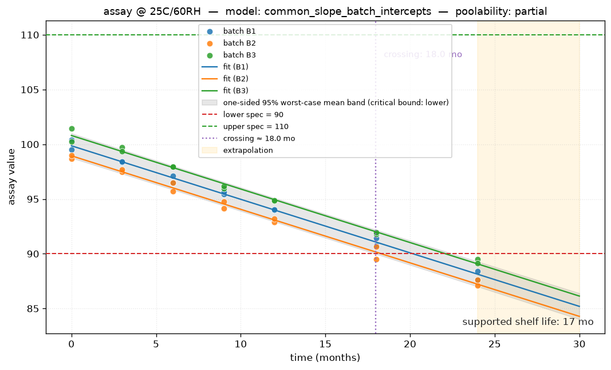

1.658e-16
< alpha → intercepts differ → common slope
Poolability notes
step1 slopes: F-test on time:C(batch), p=0.9056 (alpha=0.25)
step2 intercepts: F-test on C(batch), p=1.658e-16 (alpha=0.25)
Shelf-Life Estimate
Supported shelf life
17 months
Statistical crossing (months)
18.0
Observed long-term data (months)
24.0
Confidence bound used
Lower one-sided 95% confidence bound on the mean response
lower_one_sided_95_mean
(level = 0.95)
Crossing status
Crossed specification within the evaluated horizon
crossed
Governing batch
B2
Extrapolation
No — supported period is within observed data
The supported shelf life is rounded down to the
nearest whole month, per ICH Q1E.
Confidence-Bound Plot

Observed data by batch, fitted regression, the
lower one-sided 95% confidence bound on the mean response, and the relevant
specification limit. Crossing point and extrapolation region
are marked. Plot file: confidence_plot.png.
Diagnostics & Assumptions
Linearity:
ok
Homoscedasticity:
ok
Normality of residuals:
ok
Influential points (Cook's d):
4
Diagnostic notes
Influence check: 4 observation(s) have Cook's distance > 4.0/n = 0.0952 (row indices [13, 24, 28, 29]). A single observation controls the fit. Consider a sensitivity analysis with and without these points; do not auto-exclude.
Warnings & Limitations
data_quality[info] duplicate_batch_time_no_replicate: 42 rows share (batch, time, attribute) — no 'replicate' column
step1 slopes: F-test on time:C(batch), p=0.9056 (alpha=0.25)
step2 intercepts: F-test on C(batch), p=1.658e-16 (alpha=0.25)
Influence check: 4 observation(s) have Cook's distance > 4.0/n = 0.0952 (row indices [13, 24, 28, 29]). A single observation controls the fit. Consider a sensitivity analysis with and without these points; do not auto-exclude.
Disclaimer. This report is ICH Q1E-inspired and intended for educational, exploratory, and reproducible decision-support use. It is not a substitute for qualified regulatory, statistical, or quality review. The toolkit does not provide 21 CFR Part 11 audit trails, electronic signatures, or data integrity controls, and is not a validated GxP system.